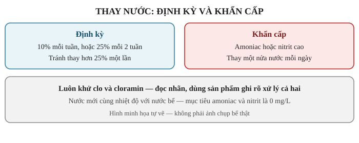

Thay nước cho bể cá đúng cách: bao nhiêu, bao lâu và lỗi thường gặp
Tác giả: Ruler
Thay nước là việc chăm sóc thường xuyên nhất của người nuôi cá cảnh, và cũng là việc dễ làm sai nhất. Nhiều người thay nước vì nước nhìn đục, thay rất nhiều một lần rồi ngạc nhiên khi cá mệt hơn sau đó. Ngược lại, có người gần như không thay nước bao giờ vì nước vẫn trong, rồi ngạc nhiên khi cá chết dần dù lọc vẫn chạy. Cả hai sai lầm đều xuất phát từ cùng một hiểu lầm: cho rằng thay nước là để làm nước "sạch" theo nghĩa nhìn bằng mắt.
Bài này viết về thay nước định kỳ cho bể cộng đồng nước ngọt đã chạy lọc xong. Bài không viết lại chu trình nitơ đầy đủ, vì chu trình đó đã được giải thích ở Bài 2. Bài này chỉ dùng một kết quả của chu trình đó: lọc sinh học chuyển amoniac thành nitrit rồi thành nitrat, nhưng lọc không loại bỏ được nitrat và các chất thải hòa tan khác. Thay nước là cách pha loãng những thứ lọc không xử lý được.
Thay nước để làm gì
Trong bể đã ổn định, vi khuẩn trong lọc xử lý amoniac và nitrit, nhưng nitrat vẫn tích tụ dần. RSPCA viết rõ vì sao cần thay nước hằng tuần: để pha loãng các chất thải mà lọc sinh học không phân hủy được. Nitrat ở mức cao vẫn gây hại cho cá, dù nó ít độc hơn amoniac và nitrit nhiều. Ngoài nitrat, nước cũ còn tích tụ chất hữu cơ hòa tan, phốt phát và các chất khác từ thức ăn thừa và chất thải của cá. Những chất này nuôi rêu tảo và làm nước có mùi, dù nước vẫn có thể nhìn trong.
Vì vậy mục đích của thay nước định kỳ không phải là thay toàn bộ nước để bể "như mới". Mục đích là lấy ra một phần nước cũ, cùng với một phần cặn bẩn, rồi bù vào bằng nước mới đã xử lý, để nồng độ chất thải trong bể không tăng mãi. Một lần thay nước nhỏ và đều đặn có ích hơn một lần thay nước lớn sau nhiều tuần bỏ bê, vì thay nước lớn làm nhiệt độ, pH và các chỉ số khác thay đổi đột ngột, cá phải thích nghi lại trong thời gian ngắn.
Người mới cũng cần phân biệt thay nước định kỳ với thay nước khẩn cấp. Thay nước định kỳ làm khi cá khỏe và các chỉ số đo được đang ở mức an toàn, với lượng vừa phải và lịch đều đặn. Thay nước khẩn cấp làm khi amoniac hoặc nitrit đã vượt mức an toàn, với lượng lớn hơn và lặp lại mỗi ngày cho tới khi chỉ số về mức an toàn. Hai việc này có lượng nước khác nhau, và bài này trình bày riêng từng việc để người đọc không lấy lượng nước khẩn cấp làm lịch hằng tuần.
Bao nhiêu và bao lâu: các nguồn không đưa một con số duy nhất

Đây là phần người mới hay tìm một con số chắc chắn nhất, và cũng là phần các nguồn uy tín không thống nhất với nhau. Bài này ghi lại đúng từng nguồn, thay vì chọn một con số rồi trình bày như mọi nguồn đều đồng ý.
| Nguồn | Lượng nước | Tần suất | Ghi chú |
|---|---|---|---|
| RSPCA, mục lọc | 30% | Mỗi tuần | Ghi trong phần giải thích vì sao cần pha loãng chất thải |
| RSPCA, mục thay nước | 10% | Không ghi tần suất riêng trong đoạn đó | Ghi cùng trang với con số 30% ở trên — hai con số khác nhau trên cùng một trang |
| Aqueon, "Aquarium Do's And Don'ts" | 10% hoặc 25% | 10% mỗi tuần, hoặc 25% mỗi hai tuần | Aqueon khuyên tránh thay hơn 25% trong một lần thường kỳ |
| Tetra, trang hỏi đáp và trang hướng dẫn | 25% | Mỗi hai tuần | Tetra khuyên cố gắng không thay hơn 50% một lần |
| Pets in the Classroom, tài liệu chất lượng nước | 10–25% | Khi chỉ số đang tăng, thay rồi đo lại | Tài liệu này không đưa một lịch cố định cho mọi bể |
Nhìn vào bảng trên, điểm chung của các nguồn là thay một phần nước, đều đặn, chứ không phải thay toàn bộ nước. Điểm khác nhau là lượng nước và tần suất. RSPCA ghi 30% mỗi tuần ở một chỗ và 10% ở một chỗ khác trên cùng một trang, vì vậy bài này không dùng một trong hai con số đó làm quy tắc duy nhất. Aqueon đưa hai lựa chọn tương đương nhau: thay ít hơn nhưng thường xuyên hơn, hoặc thay nhiều hơn nhưng thưa hơn. Tetra đưa một lựa chọn ở giữa: 25% mỗi hai tuần.
Cách dùng bảng này trong thực tế là chọn một điểm khởi đầu rồi điều chỉnh bằng kết quả đo của chính bể mình. Với bể cộng đồng 60 lít của người mới, điểm khởi đầu hợp lý là thay 10% mỗi tuần hoặc 25% mỗi hai tuần theo Aqueon, và ghi lại kết quả đo amoniac, nitrit và nitrat trước mỗi lần thay. Nếu nitrat tăng dần qua các tuần dù bạn đã thay nước đều, hãy thay thường xuyên hơn hoặc thay nhiều hơn một chút trong giới hạn của Aqueon, rồi đo lại. Nếu nitrat ổn định và cá khỏe, không cần tăng lượng nước chỉ vì một nguồn khác ghi con số lớn hơn.
Với bể 60 lít, các con số trên quy ra lít nước như sau: 10% là 6 lít, 25% là 15 lít, 30% là 18 lít. Người mới nên đo bằng xô có vạch lít, không ước lượng bằng mắt, vì ước lượng bằng mắt khi hút nước ra khỏi bể thường sai nhiều hơn bạn nghĩ. Ghi lại số lít đã thay và ngày thay vào sổ, giống như ghi kết quả đo nước, để sau vài tuần bạn nhìn được lịch của chính bể mình thay vì nhớ mang máng.
Về nitrat, các nguồn cũng không đưa một ngưỡng duy nhất. Tetra ghi trong bảng thông số của mình rằng nitrat dưới 50 ppm là mức ghi cho bể cộng đồng nước ngọt, và dưới 30 ppm cho bể cây và cá đĩa. Tài liệu của Pets in the Classroom dùng khoảng 0–20 mg/L làm khoảng bình thường trong bảng ghi kết quả đo của mình, và viết rằng nếu nitrat vượt 20 mg/L thì có thể dùng thay nước để giảm xuống. Hai cách ghi này khác nhau vì chúng phục vụ mục đích khác nhau: một bên là giới hạn ghi trong bảng thông số, một bên là khoảng dùng để theo dõi trong tài liệu học tập. Bài này không chọn một ngưỡng nitrat duy nhất làm luật cho mọi bể. Thay vào đó, hãy đo nitrat đều đặn, ghi lại xu hướng qua các tuần, và dùng thay nước để giữ nitrat không tăng mãi. Nếu nitrat tăng nhanh dù bạn đã thay nước đều, hãy xem lại lượng thức ăn và số lượng cá trước khi tăng lượng nước thay, vì nguyên nhân gốc có thể là cho ăn quá nhiều, và cách cho ăn đúng đã được viết đầy đủ ở Bài 5.
Trường hợp khẩn cấp: khi amoniac hoặc nitrit đã trên 0
Mức an toàn mà RSPCA đặt ra cho amoniac và nitrit là 0 mg/L cho cả hai, và Bài 2 cùng Bài 3 của website này cũng dùng mốc đó. Tài liệu của Pets in the Classroom ghi hệ lọc vận hành tốt nên giữ amoniac dưới 0,2 mg/L. Hai cách ghi này khác nhau: RSPCA đặt mốc an toàn là 0, còn tài liệu kia ghi mức mà hệ lọc tốt nên giữ được. Bài này dùng mốc 0 của RSPCA, giống như Bài 2 và Bài 3, vì đó là mốc thống nhất trong toàn bộ website này.
Khi bộ test cho thấy amoniac hoặc nitrit trên 0, lịch thay nước định kỳ không còn đủ. RSPCA viết trong trường hợp đó cần thay một nửa lượng nước mỗi ngày và tiếp tục đo cho tới khi điều kiện cải thiện. Tetra viết trong trang hỏi đáp của mình rằng thay 25% nước sẽ làm giảm các chỉ số này cho tới khi bạn sửa được nguyên nhân gốc. Hai hướng dẫn này không mâu thuẫn nhau nếu hiểu đúng vai trò của chúng: Tetra nói về một lần thay nước để giảm chỉ số tạm thời, còn RSPCA nói về việc lặp lại mỗi ngày cho tới khi nước sạch hẳn. Trong thực tế, người nuôi nên thay một phần lớn nước đã khử clo và đúng nhiệt độ, đo lại sau đó, giảm cho ăn xuống mức tối thiểu, và lặp lại vào ngày hôm sau nếu chỉ số vẫn trên 0. Đừng thả thêm cá mới trong thời gian này, và đừng mua thuốc làm trong nước để thay cho việc thay nước và đo nước.
Một điểm cần nói rõ: thay một nửa nước mỗi ngày là cách xử lý khẩn cấp khi chỉ số đã cao, không phải lịch hằng tuần. Aqueon khuyên tránh thay hơn 25% trong một lần thường kỳ, vì thay nước lớn có thể làm cá stress và làm xáo trộn cân bằng trong bể. Tetra cũng khuyên cố gắng không thay hơn 50% một lần, vì thay quá nhiều có thể làm mất vi khuẩn có lợi và làm nước đục. Vì vậy đừng lấy lượng nước khẩn cấp làm thói quen, và đừng thay toàn bộ nước để "làm sạch" bể, vì việc đó phá vỡ cân bằng mà bể đã mất nhiều tuần để xây dựng. Aqueon cũng dặn rõ đừng tháo dỡ toàn bộ bể để vệ sinh, vì việc đó phá hủy cân bằng sinh học và có thể gây hậu quả nghiêm trọng.
Chuẩn bị nước mới: khử clo, khử cloramin và khớp nhiệt độ
Nước máy ở nhiều nơi được khử trùng bằng clo hoặc cloramin để an toàn cho người uống. Với cá và vi khuẩn lọc, hai chất này đều nguy hiểm. RSPCA viết clo trong nước máy nguy hiểm cho cả cá và vi khuẩn, vì vậy cần cho chất khử clo vào nước mới. Tài liệu của Pets in the Classroom viết clo và cloramin cực độc với sinh vật thủy sinh, gây kích ứng và tổn thương mang khiến cá không thở được, và cần cho chất xử lý nước vào nước máy mỗi khi thêm nước vào bể.
Clo và cloramin không giống nhau, và cách xử lý chúng cũng khác nhau. Clo là khí hòa tan trong nước và bay đi dần nếu để nước đứng. RSPCA có nhắc cách để nước đứng 24 giờ cho clo bay đi. Cloramin là clo gắn với amoniac, bền hơn clo nhiều và không bay đi nhanh như vậy. App-Aquatic viết rõ clo bay đi nếu để nước trong xô 24 giờ, còn cloramin thì không, và muốn loại cloramin cần thuốc xử lý chuyên dụng phá vỡ liên kết clo – amoniac. Vì vậy đừng chỉ để nước đứng qua đêm rồi cho rằng nước đã an toàn, nếu bạn không biết nước máy nhà mình dùng clo hay cloramin.
Một điểm khác cũng cần nói rõ, vì nhiều người mới nhầm lẫn: natri thiosulfat là chất thường có trong thuốc khử clo, nhưng App-Aquatic viết natri thiosulfat trung hòa được clo mà không phá vỡ được cloramin. Tài liệu của Pets in the Classroom ghi chất xử lý nước là natri thiosulfat và khuyên cho vào nước máy mỗi khi thêm nước vào bể. Hai nguồn này không mâu thuẫn nhau nếu đọc kỹ: tài liệu kia nói về chất xử lý nước nói chung, còn App-Aquatic nói rõ giới hạn của riêng natri thiosulfat với cloramin. Cách làm an toàn cho người mới là đọc nhãn chai thuốc xử lý nước của mình và chỉ dùng sản phẩm ghi rõ xử lý được cả clo và cloramin, thay vì đoán dựa trên thành phần ghi trên nhãn. Nếu bạn không chắc nước máy nhà mình dùng chất nào, hãy hỏi công ty cấp nước địa phương, hoặc cứ chọn sản phẩm ghi rõ xử lý được cả hai.
Về liều lượng, App-Aquatic viết liều thuốc xử lý tính theo lượng nước mới thêm vào, không phải theo tổng thể tích bể. Ví dụ thay 15 lít nước trong bể 60 lít thì tính liều cho 15 lít, không tính cho 60 lít. Một số sản phẩm có cách tính liều riêng khi dùng để xử lý amoniac, vì vậy nhãn chai bạn đang dùng mới là căn cứ cuối cùng. Hãy cho thuốc vào nước mới trước khi đổ nước vào bể, hoặc cho vào xô nước mới rồi khuấy đều, thay vì đổ nước máy chưa xử lý vào bể rồi mới cho thuốc sau.
Nhiệt độ nước mới quan trọng không kém việc khử clo. RSPCA viết khi đổ nước vào bể, bạn không muốn nước mới có nhiệt độ khác với nước trong bể, vì điều đó sẽ làm cá sốc. Aqueon viết nước thay vào phải có cùng nhiệt độ với nước trong bể. App-Aquatic đưa ra mục tiêu thực tế: nước mới nên chênh lệch trong khoảng 1–2°C so với nước trong bể trước khi đổ vào. Để đạt được điều đó, hãy pha nước nóng và nước lạnh trong xô rồi đo bằng nhiệt kế, đừng đoán bằng tay. Nước để ở nhiệt độ phòng trong mùa lạnh thường lạnh hơn nước trong bể nhiệt đới nhiều, vì vậy đừng đổ thẳng nước lạnh vào bể rồi mong sưởi sẽ làm ấm lại kịp. Ngược lại, nước mới quá nóng cũng nguy hiểm như nước quá lạnh. Hãy đo, ghi lại, và chỉ đổ vào khi nhiệt độ đã gần bằng nhiệt độ bể.
Cuối cùng, hãy dùng xô riêng chỉ cho bể cá, không dùng xô đã đựng xà phòng hay hóa chất tẩy rửa. Aqueon dặn không dùng xô, miếng chà hay dụng cụ nào đã dùng với xà phòng hoặc hóa chất cho bể cá. Xà phòng còn sót lại dù rất ít cũng có thể gây hại cho cá. Nếu bạn không chắc một chiếc xô đã từng đựng gì, hãy mua một chiếc xô mới và chỉ dùng cho bể cá.
Các bước thay nước, từ đầu tới cuối
Trình tự dưới đây làm cho một lần thay nước định kỳ 10–25% trong bể cộng đồng đã ổn định. Nếu bể của bạn đang trong tình trạng khẩn cấp vì amoniac hoặc nitrit cao, hãy làm theo phần khẩn cấp ở trên thay vì trình tự này.
Bước 1 — Đo nước trước khi thay. Đo amoniac, nitrit, nitrat, pH và nhiệt độ, ghi lại con số và ngày giờ. Việc đo trước cho bạn biết lần thay này cần làm gì: nếu mọi chỉ số đang ở mức an toàn thì thay theo lịch định kỳ; nếu amoniac hoặc nitrit trên 0 thì chuyển sang cách xử lý khẩn cấp. RSPCA khuyên kiểm tra chất lượng nước mỗi hai tuần bằng bộ test, và bộ test amoniac cùng nitrit là thiết yếu, không phải đồ thêm. Người mới nên đo thường xuyên hơn mức tối thiểu đó trong tháng đầu, rồi mới giãn ra khi bể đã ổn định.
Bước 2 — Chuẩn bị nước mới. Tính số lít cần thay, cho nước máy vào xô riêng, cho thuốc xử lý nước đủ liều cho lượng nước mới đó, pha nhiệt độ tới khi chênh lệch trong khoảng 1–2°C so với nước bể, rồi đo lại bằng nhiệt kế. Để xô nước mới ở gần bể, tránh để cá hay trẻ nhỏ làm đổ.
Bước 3 — Tắt các thiết bị cần tắt. Nếu mực nước sẽ xuống thấp hơn sưởi, hãy tắt sưởi trước và chờ sưởi nguội, vì sưởi chạy khi không ngập nước có thể nứt vỡ. Cách lắp và dùng sưởi an toàn đã được viết ở Bài 4, trong đó có hướng dẫn của hãng Eheim rằng sưởi phải ngập ít nhất tới vạch MIN. WATER LEVEL trước khi cắm điện và không bao giờ bật sưởi ngoài nước. Lọc có thể để chạy hoặc tắt tạm trong lúc hút nước, tùy theo loại lọc và mực nước, nhưng đừng để lọc chạy khô. Hãy làm theo hướng dẫn của lọc bạn đang dùng.
Bước 4 — Hút nước ra bằng ống xi-phông, để cá ở trong bể. RSPCA viết khi thay nước thì để cá ở trong bể và hút 10% nước ra bằng ống xi-phông. Tetra cũng viết không có lý do gì phải vớt cá ra trong lúc thay nước. Vớt cá ra, cho vào xô hay túi, rồi thả lại vào bể gây stress cho cá nhiều hơn việc để cá ở trong bể trong lúc bạn hút nước nhẹ nhàng. Trong lúc hút nước, bạn có thể hút nhẹ cặn ở nền bể bằng ống hút nền. Cách vệ sinh nền và lọc đầy đủ được viết ở Bài 9, bài này chỉ nhắc ngắn: hút một phần nền mỗi lần, đừng hút toàn bộ nền trong một lần thay nước.
Bước 5 — Đổ nước mới vào từ từ. Đổ nước mới dọc theo thành bể hoặc lên một chiếc đĩa đặt trên nền, để dòng nước không xới tung nền và không thổi thẳng vào cá. Đổ chậm, quan sát cá trong lúc đổ. Nếu cá bơi tán loạn, thở gấp hoặc nổi lên mặt nước ngay sau khi đổ nước mới, hãy dừng lại, đo nhiệt độ và kiểm tra xem nước mới đã khử clo đúng cách hay chưa.
Bước 6 — Bật lại thiết bị và kiểm tra. Khi mực nước đã về mức bình thường, bật lại sưởi và lọc, kiểm tra lọc có chạy lại bình thường không, kiểm tra nhiệt độ sau khoảng 30 phút. Ghi lại ngày thay, số lít đã thay và kết quả đo trước khi thay vào sổ. Sổ ghi chép này là thứ giúp bạn điều chỉnh lịch thay nước theo bể của mình, thay vì làm theo trí nhớ.
Dấu hiệu bạn đang thay nước quá ít
Nếu bạn thay nước quá ít hoặc quá thưa, các dấu hiệu thường xuất hiện từ từ, không phải trong một ngày. Nitrat tăng dần qua các lần đo, dù amoniac và nitrit vẫn ở 0. Rêu tảo phát triển mạnh hơn, đặc biệt là rêu bám kính và rêu sợi, dù bạn không bật đèn quá lâu. Nước có mùi hôi nhẹ, mặt nước có váng dầu hoặc bọt không tan. Cá ăn ít dần, màu nhạt dần, hay cạ mình vào đồ trang trí. Những dấu hiệu này không tự nó chứng minh nguyên nhân là thay nước quá ít, vì cho ăn quá nhiều hay nuôi quá nhiều cá cũng gây ra các dấu hiệu tương tự. Cách phân biệt là đo nước và xem lại sổ ghi chép: nếu bạn cho ăn đúng như Bài 5, số lượng cá không đổi, mà nitrat vẫn tăng đều qua các tuần, thì lịch thay nước hiện tại chưa đủ cho bể của bạn. Khi đó hãy tăng tần suất thay nước hoặc tăng lượng nước mỗi lần trong giới hạn đã nêu, rồi đo lại sau hai tuần để xem nitrat có ngừng tăng hay không.
Dấu hiệu bạn đang thay nước quá nhiều hoặc quá nhanh
Thay nước quá nhiều trong một lần thường gây ra dấu hiệu ngay sau khi thay: cá thở gấp, bơi tán loạn, trốn một góc, bỏ ăn vào bữa sau. Nước có thể đục trắng sau khi thay, vì vi khuẩn trong nước phát triển mạnh khi cân bằng bị xáo trộn. Aqueon khuyên tránh thay hơn 25% trong một lần thường kỳ, vì thay nước lớn có thể làm cá stress và làm xáo trộn cân bằng trong bể. Tetra khuyên cố gắng không thay hơn 50% một lần, vì thay quá nhiều có thể làm mất vi khuẩn có lợi và làm nước đục. Nếu cá của bạn mệt ngay sau mỗi lần thay nước, hãy xem lại ba thứ theo thứ tự: nhiệt độ nước mới có khớp trong khoảng 1–2°C hay không, thuốc xử lý nước có ghi rõ xử lý được cloramin hay không, và bạn có thay quá 25% trong một lần thường kỳ hay không. Sửa ba thứ đó trước khi nghĩ tới nguyên nhân khác.
Một lỗi liên quan là thay nước quá thường xuyên với lượng lớn, ví dụ thay 50% mỗi ngày trong nhiều ngày khi cá đang khỏe. Lịch đó không làm bể sạch hơn, mà làm các chỉ số dao động liên tục và cá không có thời gian ổn định. Ngoại lệ duy nhất là trường hợp khẩn cấp khi amoniac hoặc nitrit đã cao, như đã viết ở trên: khi đó thay nhiều và lặp lại mỗi ngày là cần thiết, và bạn vẫn phải đo lại mỗi ngày để biết khi nào dừng.
Lịch mẫu cho bể cộng đồng 60 lít
Lịch dưới đây là điểm khởi đầu cho bể 60 lít đã chạy lọc xong, nuôi một đàn cá theo Bài 1, cho ăn đúng như Bài 5. Đây là ví dụ, không phải lịch cố định cho mọi bể. Bạn cần điều chỉnh theo kết quả đo của chính mình.
| Thời điểm | Việc làm | Ghi chú |
|---|---|---|
| Mỗi tuần, một ngày cố định | Đo amoniac, nitrit, nitrat, pH, nhiệt độ; ghi lại | Đo trước khi thay nước, không đo sau khi thay rồi lấy đó làm kết quả của tuần |
| Mỗi tuần | Thay 10% nước (6 lít với bể 60 lít), hoặc thay 25% (15 lít) mỗi hai tuần | Chọn một trong hai lịch của Aqueon, giữ đều đặn, đừng đổi qua đổi lại mỗi tuần |
| Mỗi lần thay nước | Hút nhẹ một phần nền, kiểm tra lọc có chạy bình thường không | Cách vệ sinh lọc và nền đầy đủ ở Bài 9 |
| Mỗi tháng | Xem lại sổ ghi chép: nitrat có tăng dần không, có tuần nào amoniac trên 0 không | Nếu nitrat tăng đều, tăng tần suất thay nước rồi đo lại sau hai tuần |
| Khi amoniac hoặc nitrit trên 0 | Chuyển sang cách xử lý khẩn cấp: thay một phần lớn nước đã khử clo mỗi ngày, giảm cho ăn, đo lại mỗi ngày | Không thả thêm cá mới cho tới khi hai chỉ số về 0 |
Lịch này cố tình để trống một việc: không ghi "thay toàn bộ nước mỗi tháng" hay "tháo bể vệ sinh định kỳ", vì hai việc đó không có trong hướng dẫn của các nguồn đã mở. Việc tháo toàn bộ bể để vệ sinh phá vỡ cân bằng sinh học, và Aqueon dặn rõ đừng làm như vậy.
Năm lỗi người mới hay mắc nhất
Lỗi thứ nhất là thay nước bằng nước máy chưa khử clo. Người mới thường nhớ khử clo cho nước lần đầu khi lập bể, nhưng lại quên khử clo cho nước thay sau đó. Clo và cloramin gây tổn thương mang, và cá có thể mệt ngay sau khi thay nước. Cách tránh lỗi này là luôn cho thuốc xử lý nước vào xô nước mới trước khi đổ vào bể, và luôn dùng sản phẩm ghi rõ xử lý được cả clo và cloramin.
Lỗi thứ hai là đổ nước mới quá lạnh hoặc quá nóng. Người mới thường thử nước bằng tay và cho rằng "hơi lạnh một chút không sao". Nước lạnh hơn bể 5°C đổ vào bể 60 lít trong một lần thay 25% làm nhiệt độ bể giảm nhanh, và cá nhiệt đới nhạy cảm với thay đổi đột ngột. App-Aquatic đặt mục tiêu nước mới chênh lệch trong khoảng 1–2°C so với nước bể. Hãy đo bằng nhiệt kế, đừng đoán bằng tay.
Lỗi thứ ba là thay quá nhiều nước một lần để "bù" cho nhiều tuần không thay. Thay 50–100% nước sau một tháng bỏ bê không làm bể sạch hơn, mà làm cá sốc vì nhiệt độ và pH thay đổi đột ngột, đồng thời làm xáo trộn vi khuẩn trong lọc. Cách đúng là quay lại lịch đều đặn với lượng vừa phải, thay 10–25% mỗi lần, đo lại sau mỗi lần, và để các chỉ số ổn định dần trong hai tới ba tuần.
Lỗi thứ tư là vớt cá ra trong lúc thay nước. Vớt cá ra làm cá stress, dễ làm rách vây và làm cá hoảng loạn khi thả lại. RSPCA và Tetra đều viết không cần vớt cá ra khi thay nước. Hãy để cá ở trong bể, làm việc nhẹ nhàng, và giữ ống hút tránh xa cá đang nghỉ ở đáy.
Lỗi thứ năm là dùng chung xô và dụng cụ với việc nhà. Xô đã đựng xà phòng, nước lau sàn hay thuốc tẩy có thể còn sót hóa chất dù đã tráng qua. Aqueon dặn không dùng xô hay miếng chà đã dùng với xà phòng hoặc hóa chất cho bể cá. Hãy mua một bộ xô, ống hút và vợt riêng cho bể cá, ghi nhãn rõ ràng và cất riêng.
Kết luận
Thay nước đúng không phải là thay càng nhiều càng tốt, mà là thay một phần nước, đều đặn, bằng nước mới đã khử clo và cloramin, đúng nhiệt độ, và điều chỉnh theo kết quả đo của chính bể mình. Các nguồn uy tín không đưa một con số duy nhất: RSPCA ghi 30% mỗi tuần ở một chỗ và 10% ở một chỗ khác trên cùng một trang, Aqueon khuyên 10% mỗi tuần hoặc 25% mỗi hai tuần và tránh thay hơn 25% trong một lần thường kỳ, Tetra khuyên 25% mỗi hai tuần và cố gắng không thay hơn 50% một lần. Người mới nên bắt đầu từ 10% mỗi tuần hoặc 25% mỗi hai tuần, đo nước trước mỗi lần thay, ghi lại kết quả, và chỉ tăng lượng nước khi số đo cho thấy cần tăng. Khi amoniac hoặc nitrit đã trên 0, hãy chuyển sang cách xử lý khẩn cấp và đo lại mỗi ngày, thay vì giữ lịch định kỳ. Khi bạn thay nước đều, đo nước đều và ghi chép đều, bể của bạn sẽ ổn định hơn rất nhiều so với bể chỉ được thay nước khi nước đã đục.
Nguồn tham khảo
- RSPCA, "Choosing an Aquarium for Pet Fish" — lọc sinh học chuyển amoniac thành nitrit rồi thành nitrat, cần thay nước hằng tuần 30% để pha loãng chất thải (mục lọc) nhưng mục thay nước ghi lấy ra 10% bằng ống xi-phông — hai con số khác nhau trên cùng một trang, vì vậy bài không dùng một con số duy nhất làm quy tắc; để cá ở trong bể khi thay nước, khuấy nhẹ bọt lọc trong nước bể đã hút ra, không rửa dưới vòi; clo nguy hiểm cho cá và vi khuẩn, cho chất khử clo hoặc để nước đứng 24 giờ; nước mới khác nhiệt độ sẽ làm cá sốc; amoniac và nitrit an toàn ở 0 mg/L, nếu cao hơn thì thay một nửa nước mỗi ngày; kiểm tra nước mỗi hai tuần, bộ test amoniac và nitrit là thiết yếu (truy cập 23/11/2026): https://science.rspca.org.uk/en/web/rspca/adviceandwelfare/pets/fish/environment
- Aqueon, "Aquarium Do's And Don'ts" — thay 10% nước mỗi tuần hoặc 25% mỗi hai tuần, nước thay vào phải cùng nhiệt độ với nước trong bể, luôn xử lý nước máy bằng thuốc xử lý để trung hòa clo và amoniac trước khi cho vào bể, tránh thay hơn 25% vì thay nước lớn có thể làm cá stress và xáo trộn cân bằng trong bể, đừng tháo dỡ toàn bộ bể để vệ sinh, đừng dùng xô hay miếng chà đã dùng với xà phòng hoặc hóa chất (truy cập 23/11/2026): https://www.aqueon.com/articles/dos-donts
- Tetra, "Aquarium QA" và "Aquarium dos and donts" — thay 25% nước mỗi hai tuần, khuấy sỏi hoặc dùng dụng cụ hút sỏi khi thay nước, không cần vớt cá ra khi thay nước, khi cho nước vào lại thì dùng Tetra AquaSafe để loại clo và cloramin, cố gắng không thay hơn 50% nước vì sẽ làm mất vi khuẩn có lợi và làm nước đục, thay hộp lọc ít nhất mỗi bốn tuần hoặc khi thấy dòng nước giảm rõ rệt, theo dõi pH, amoniac và nitrit thường xuyên (truy cập 23/11/2026): https://www.tetra-fish.com/learning-center/getting-started/aquarium-qa.aspx và https://www.tetra-fish.com/learning-center/getting-started/aquarium-dos-and-donts.aspx
- App-Aquatic, "Using Tap Water for Aquarium | Dechlorinator & Safety" — nước máy chứa clo hoặc cloramin, cả hai đều gây hại cho cá và giết vi khuẩn có lợi, dùng thuốc xử lý nước mỗi lần cho nước máy vào bể; clo bay đi nếu để nước trong xô 24 giờ, cloramin thì không; natri thiosulfat trung hòa được clo nhưng không phá vỡ được cloramin, cần sản phẩm ghi rõ xử lý được cả hai; nước mới nên chênh lệch trong khoảng 1–2°C so với nước trong bể; tính liều thuốc theo lượng nước mới thêm vào, không tính theo tổng thể tích bể (truy cập 23/11/2026): https://app-aquatic.com/guide-tap-water-aquarium.html
- Pets in the Classroom, "Water Quality in the Freshwater Aquarium" — clo và cloramin cực độc với sinh vật thủy sinh, gây tổn thương mang, cần cho chất xử lý nước (natri thiosulfat) vào nước máy mỗi khi thêm nước vào bể; hệ lọc vận hành tốt nên giữ amoniac dưới 0,2 mg/L; nếu chỉ số đang tăng thì thay 10–25% nước rồi đo lại; nếu nitrat vượt 20 mg/L thì có thể dùng thay nước để giảm xuống; khoảng bình thường trong bảng ghi của tài liệu này là nitrat 0–20 mg/L (truy cập 23/11/2026): https://petsintheclassroom.org/wp-content/uploads/2017/11/Aquarium-Water-Quality-Curriculum.pdf